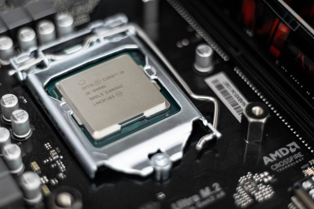

وحدة المعالجة المركزية أو المعالج ، هي أحد مكونات الحاسوب التي تقوم بتفسير التعليمات ومعالجة البيانات التي تتضمنها البرمجيات. يعتبر المعالج بالإضافة للذاكرة الرئيسية ووحدات الإدخال والإخراج من أهم مكونات الحواسيب الدقيقة الحديثة. تعرف المعالجات التي تم تصنيعها بواسطة الدائرات المتكاملة بالمعالجات الدقيقة والتي بدأ تصنيعها منذ منتصف سبعينات القرن العشرين على شكل رقاقات مدمجة حلّت محلّ معظم أنواع المعالجات الأخرى.

